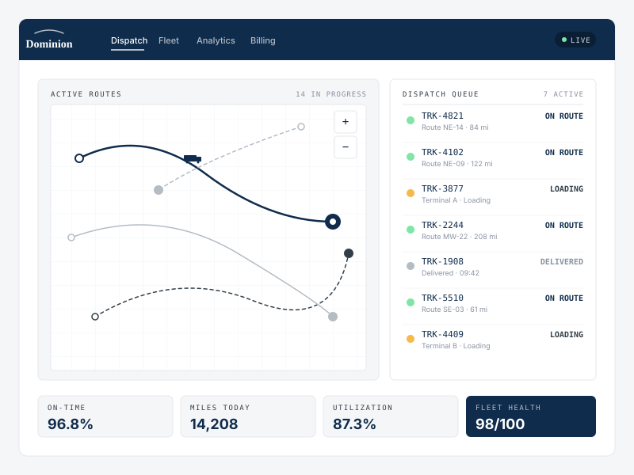

We build the operational infrastructure, routing intelligence, and dispatch software that power today's leading logistics operators — so fleets move faster, cleaner, and with total visibility.
Founded in October 2022, Dominion Logistics, Inc. engineers the digital backbone for modern supply chain and transport operations. We build high-performance operational infrastructure, routing intelligence, and dispatch software that powers today's leading logistics operators.
By bridging complex transportation workflows with scalable technology, we empower businesses to optimize fleets, reduce operational friction, and execute seamlessly across every mile.
A single operator console that unifies dispatch, live fleet status, and key metrics — so decisions get made in seconds, not scattered across five different tools.

The logistics world Dominion is built for — routes across continents, ports moving in real time, and the networks that connect them.
Seven integrated capabilities that eliminate operational bottlenecks and modernize every layer of your transportation stack. Click any service for a deeper look.
Automated route optimization, dynamic real-time asset tracking, load sequencing, and centralized dispatch management.
Learn more → 02 / InfrastructureUnify legacy Transportation Management Systems, custom APIs, and operational data pipelines into a single high-throughput platform.
Learn more → 03 / MobileIntuitive mobile tools for drivers — turn-by-turn routing, ePOD, duty status tracking, and instant dispatch updates.
Learn more → 04 / Fleet HealthSensor and telematics integration that monitors vehicle health, anticipates maintenance, and reduces unplanned downtime.
Learn more → 05 / AnalyticsCustom BI suites offering granular visibility into fuel efficiency, lane profitability, driver metrics, and throughput.
Learn more → 06 / BillingDigitize rate sheets, streamline carrier payments, automate invoicing, and audit freight bills end-to-end.
Learn more → 07 / AdvisoryStrategic technical advisory to evaluate legacy stacks, eliminate bottlenecks, and architect cloud infrastructure for growth.
Learn more →Every workflow is built with dispatchers, drivers, and operations leads in the room — not just engineers.
We unify what you have. Legacy TMS, ELDs, telematics, and accounting systems all speak to one platform.
Cloud architecture that grows with your fleet — from single-terminal ops to national multi-modal networks.
Dashboards designed for decisions: lane profitability, driver performance, fuel efficiency, and throughput at a glance.
Whether you're consolidating legacy tools or building a new fleet from the ground up, we'll walk you through what a Dominion platform looks like for your business.
Contact our team →